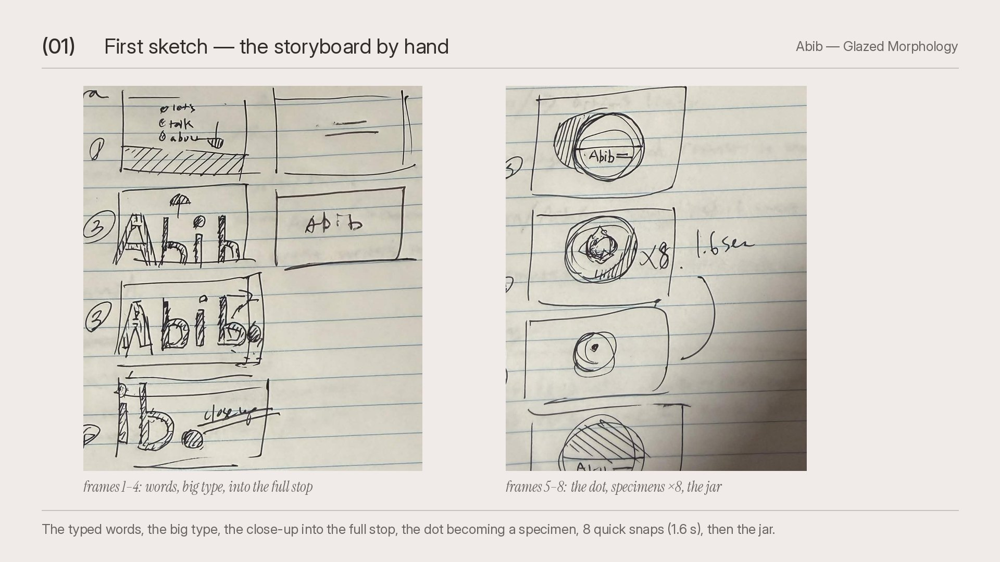
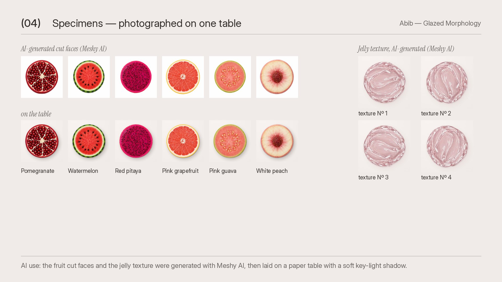
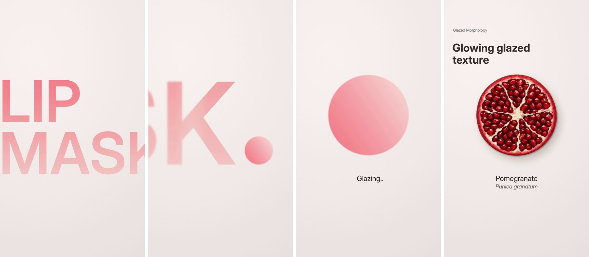

Competition entry, Abib × DD@P creative sprint
Glazed Morphology
A 15-second vertical film for Abib’s PDRN collagen lip mask, where a full stop turns into a glazed specimen.
Overview
Made for the Abib × DD@P creative sprint. The film opens on three words, What is Abib, then LIP MASK fills the frame. The camera pushes into the full stop, and the dot glazes over into a jelly sphere.
From there it becomes a specimen sheet. Fruit cut faces and jelly textures sit on one paper table, each paired with a line of Abib’s own product copy, until the jar and the logo close the film.
I wanted it to feel clean, like a lab.
Process
-

Storyboard by hand
The first sketch set the order: the typed words, the big type, the close-up into the full stop, the dot becoming a specimen, eight quick snaps, then the jar.
-

Specimens on one table
The fruit cut faces and the jelly texture were generated with Meshy AI, then laid on one paper table with a soft key-light shadow.
-

From type to specimen
LIP MASK. The close-up on the full stop. The dot glazing over. Then the first specimen.